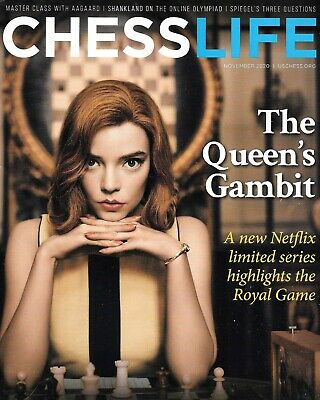

Creating The Queen’s Gambit | Netflix
Bande originale
The gift
Toutes les chansons de la série
Kasparov - Karpov deux rois pour une couronne
Giving checkmate is always fun | Judit Polgar
Understanding Chess Mastery: Jennifer Shahade at TEDxBaltimore 2014